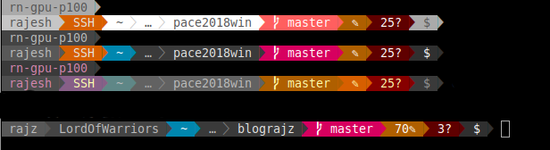

Terminal and shell prompt customization
Do you want your terminal prompt to look like a pro?

Installation steps.
- Install powerline-shell through
pip3 install powerline-shell(and maybe fonts?!) - Do this
sudo apt-get install fonts-powerlineor
$ wget https://github.com/powerline/powerline/raw/develop/font/PowerlineSymbols.otf
$ mv PowerlineSymbols.otf ~/.local/share/fonts/
$ fc-cache -vf ~/.local/share/fonts/
- Append below contents to the end of
~/.bashrcfile.function _update_ps1() { PS1=$(powerline-shell $?) } if [[ $TERM != linux && ! $PROMPT_COMMAND =~ _update_ps1 ]]; then PROMPT_COMMAND="_update_ps1; $PROMPT_COMMAND" fi - Restart terminal using
source ~/.bashrc
Custom
$ mkdir -p ~/.config/powerline-shell && \
powerline-shell --generate-config > ~/.config/powerline-shell/config.json
Edit this file as mine below!
{
"segments": [
"virtual_env",
"username",
"hostname",
"ssh",
"cwd",
"git",
"hg",
"jobs",
"battery",
"time",
"root"
],
"cwd": {
"max_depth": 2,
"full_cwd": "true"
},
"vcs": {
"show_symbol": "true"
},
"time": {
"format": "%H:%M"
},
"theme": "default"
}
or my remote config with custom theme. Themes available are
- default
- basic
- solarized_light
- solarized_dark
- washed
- gruvbox
{
"segments": [
"virtual_env",
"hostname",
"newline",
"username",
"ssh",
"cwd",
"git",
"hg",
"jobs",
"root"
],
"mode": "patched",
"cwd": {
"max_depth": 2,
"full_cwd": "true"
},
"theme": "washed" ,
"vcs": {
"show_symbol": "true"
}
}
I tried to achieve Rayan’s Terminal like below. But, mission not accomplished still..
 Cheers,
Cheers,